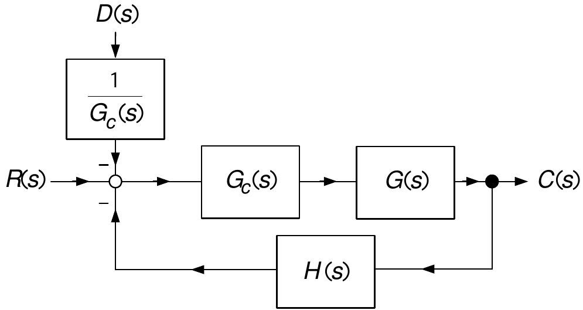
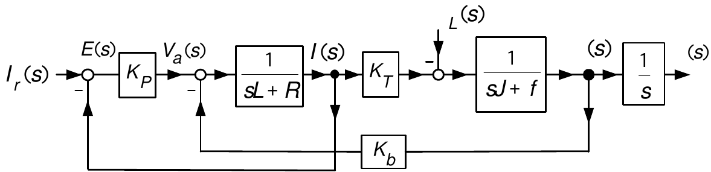
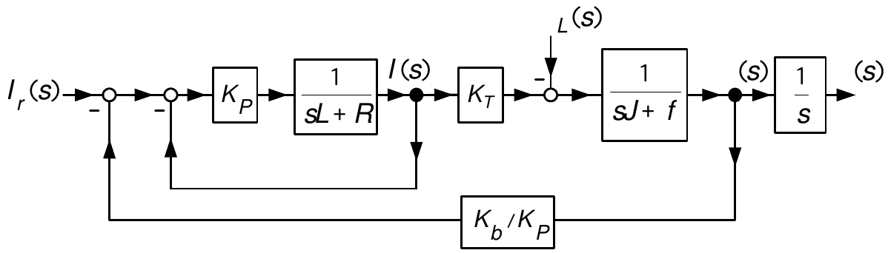

Block Diagrams
System Modeling and Control · Chapter 7
From previous slide:
\[ \begin{aligned} (sL+R)I(s) & =V_{a}(s)-K_{b}\omega(s)\\ (sJ+f)\omega(s) & =K_{T}I(s)-\tau_{L}(s)\\ s\theta(s) & =\omega(s). \end{aligned} \]
Or
\[ \begin{aligned} I(s) & =\frac{1}{sL+R}\left( V_{a}(s)-K_{b}\omega(s)\right) \\ \omega(s) & =\frac{1}{sJ+f}\left( K_{T}I(s)-\tau_{L}(s)\right) \\ \theta(s) & =\frac{1}{s}\omega(s). \end{aligned} \]
Block Diagram:
- A graphical illustration of the relationships between \(I(s),\theta (s),\omega(s),\tau_{L}(s),V_{a}(s)\)
Most block diagrams are reducible to the basic block diagram:


And make the identification
\[ G(s)=\frac{K_{T}/R}{sJ+f},\text{ }H(s)=K_{b},\text{ }R(s)=V_{a}(s)-\frac{R}{K_{T}}\tau_{L}(s),\text{ }C(s)=\omega(s). \]

Compute:
\[ \begin{aligned} E(s) & =R(s)-H(s)C(s)\\ & \\ C(s) & =G(s)E(s)=G(s)R(s)-G(s)H(s)C(s). \end{aligned} \]
Rearrange:
\[ (1+G(s)H(s))C(s)=G(s)R(s) \]
or
\[ C(s)=\frac{G(s)}{1+G(s)H(s)}R(s). \]
- This expression is used over and over again in the study of control systems.

DC motor: \(G(s)=\dfrac{b}{s(s+a)},\) \(H(s)=1,\) \(G_{c}(s)=K,\) \(D(s)=K_{L}\tau_{L}(s),\) \(R(s)=\dfrac{\theta_{0}}{s}.\)
Equivalent block diagram:

We have
\[ \begin{aligned} C(s) & =\frac{G_{c}(s)G(s)}{1+H(s)G_{c}(s)G(s)}\!\left( R(s)-\frac{1}{G_{c}(s)}D(s)\right) \\ & =\frac{G_{c}(s)G(s)}{1+H(s)G_{c}(s)G(s)}R(s)-\frac{G(s)}{1+H(s)G_{c}(s)G(s)}D(s). \end{aligned} \]
And
\[ \begin{aligned} \!\!\!\!\!E(s)=R(s)-H(s)C(s)\!\!\!\! & =\!\!\!R(s)-\!\left( \!\frac {H(s)G_{c}(s)G(s)}{1+H(s)G_{c}(s)G(s)}R(s)-\frac{H(s)G(s)}{1+H(s)G_{c}(s)G(s)}D(s)\!\!\right) \\ \!\!\!\!\! & =\!\!\!\frac{1}{1+H(s)G_{c}(s)G(s)}R(s)+\frac{H(s)G(s)}{1+H(s)G_{c}(s)G(s)}D(s). \end{aligned} \]




\[ \begin{aligned} \omega(s)\! & =\!\!\frac{\dfrac{K_{p}}{sL+R+K_{p}}\dfrac{K_{T}}{sJ+f}}{1+\dfrac{K_{b}}{K_{p}}\dfrac{K_{p}}{sL+R+K_{p}}\dfrac{K_{T}}{sJ+f}}\!\left( \!I_{r}(s)-\frac{1}{\dfrac{K_{p}K_{T}}{sL+R+K_{p}}}\tau_{L}(s)\!\!\right) \\ & \\ \!\! & =\!\!\frac{\overset{\rightarrow1\text{ as }K_{p}\rightarrow \infty}{\overbrace{\dfrac{1}{(sL+R)/K_{p}+1}}}\dfrac{K_{T}}{sJ+f}}{1+\underset{\rightarrow0}{\underbrace{\dfrac{K_{b}}{K_{p}}}}\underset{\rightarrow1\text{ as }K_{p}\rightarrow\infty}{\underbrace{\dfrac {1}{(sL+R)/K_{p}+1}}}\dfrac{K_{T}}{sJ+f}}\!\left( \!I_{r}(s)-\frac {1}{\underset{\rightarrow1\text{ as }K_{p}\rightarrow\infty }{\underbrace{\dfrac{1}{(sL+R)/K_{p}+1}}}K_{T}}\tau_{L}(s)\!\!\right) \end{aligned} \]